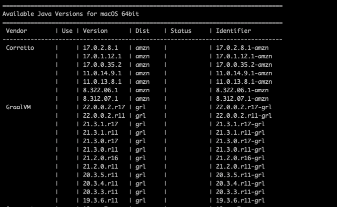
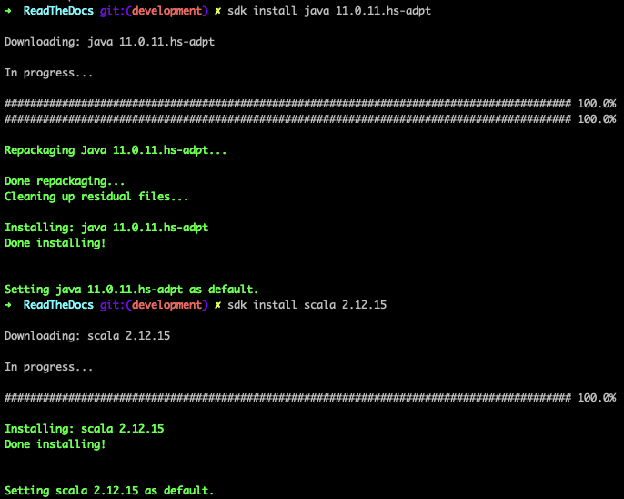
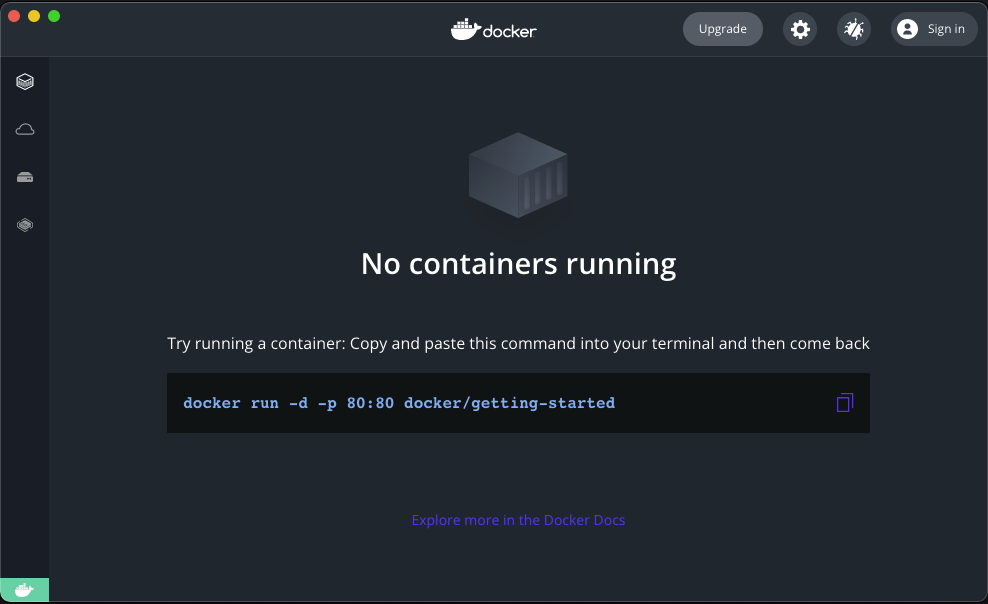
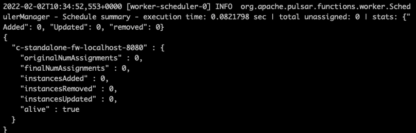
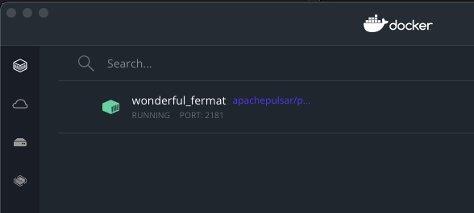

Installation
Getting started with Raphtory only takes a few steps. We will first go through the different ways to install the packages required to run Raphtory. We will then download the Raphtory library and attach this to an example project to check that everything is working correctly. This quick start tutorial is based around a Lord of the Rings example, but there are several other examples available that it will work for, all of which are explored in the Examples Projects section of this tutorial.
Installing Java, Scala and SBT (Scala Build Tool)
Raphtory is a framework written in the Scala programming language, which runs on the JVM (Java virtual machine). As such both Java and Scala are required to run Raphtory. We additionally require SBT, the scala build tool, to compile and run your first Raphtory project.
Using SDK Man
Java, Scala and SBT are all very easy to install, but we must make sure that the correct versions are installed. To manage this we recommend the Software Development Kit Manager SDK Man. This allows you to install and switch between versions of all these libraries. SDK Man is available for Mac, Linux and Windows and can be installed by following their simple tutorial here.
Once you have this installed we will need to install a distribution of Java 11, Scala 12 and the latest version of SBT. Starting with java we can list the versions available via:
sdk list java
This will look something like the following:

The Vendor here (i.e. Corretto, GrallVM) doesn’t matter really, we just need to make sure that the Major version (the first number) is 11. You can then copy the Identifier into the following command.
sdk install java IDENTIFIER
For instance: sdk install java 11.0.11.hs-adpt is the version I use
Once this is installed it should set this version as your default. You can then do the same for Scala and SBT - which only has one distributer and hence only version numbers. I have picked the latest version of Scala 12 and SBT below at the time of writing.
sdk install scala 2.12.15
sdk install sbt 1.6.2

To test that these are installed and working correctly you can run them with the –version argument to see if they are available on your class path and the correct version prints out.
java --version
scala --version
If the correct version hasn’t been set as default you can do this explicitly via sdkman. This is also how you can change back to another version of these libraries for other projects.
sdk use java 11.0.11.hs-adpt
sdk use scala 2.12.15
sdk use sbt 1.6.2
Installing Apache Pulsar
As of 0.5.0 Raphtory has moved away from Akka and now uses Apache Pulsar as its message broker to support communication between its distributed components. Using Pulsar means that all data sent within Raphtory is fully backed up and communication can easily scale to millions of messages a second. Pulsar also provides connectors to every conceivable source of data which can be used to pull data into Raphtory when building graphs.
For any running instance of Raphtory, even local, we need to be able to connect to a pulsar cluster. Fortunately, Pulsar comes with a standalone mode which packages everything together to be run once installed.
Downloading Natively
The simplest way of getting Pulsar is to download it from the apache archive and unzip the tar.
wget https://archive.apache.org/dist/pulsar/pulsar-2.9.0/apache-pulsar-2.9.0-bin.tar.gz
tar -xzf apache-pulsar-2.9.0-bin.tar.gz
Once done you may cd into the pulsar directory and run the executable in standalone mode. This will launch Apache Zookeeper, Bookkeeper and Pulsar in one service and provide everything we need to run Raphtory.
cd apache-pulsar-2.9.0
bin/pulsar standalone
Running in Docker
The alternative way of running Pulsar is to do so inside a virtual environment, the easiest to use being Docker. Note: For Mac users with the new M1 chips, this is currently the only way of running Pulsar.
The simplest way to install docker is to use the Desktop client which is available for Mac, Linux and Windows. Once you have downloaded and installed docker desktop it will start up and you will be presented with a dashboard which shows you currently have no containers (services) running:

Lets now run a container for Pulsar:
docker run -it \
-p 6650:6650 \
-p 8080:8080 \
-p 2181:2181 \
-v $PWD/data:/pulsar/data \
apachepulsar/pulsar:2.9.0 \
bin/pulsar standalone
Here we run the docker container in an interactive mode run -it where we attach to the service and can see the output. We bind the ports for Zookeeper and Pulsar to our localhost, so that Raphtory can communicate with the service. We create a volume called data in the current working directory which will contain everything written into pulsar $PWD/data:/pulsar/data. Finally we give the docker image (which contains all the code) apachepulsar/pulsar:2.9.0 and tell it to run the same command as if we run it natively (bin/pulsar standalone).
What it should look like
Pulsar standalone produces A LOT of output, which can almost exclusively be ignored. It will take about a minute to start up and you will know when this is completed as it stops outputting and prints a block of JSON telling you its address.

If you run in docker you now be able to see your container in the dashboard, given a random name, for example mine was called wonderful_fermat.

Note If you have any issues with Pulsar (errors etc.) the quickest solution is often to delete the data folder and allow it to restart from scratch. This won’t affect Raphtory as most data is recreated on new runs anyway.
Everything should now be installed and ready for us to get your first Raphtory Job underway!
Downloading the latest Raphtory release
To begin, you must clone the example repository from github and download the latest build of Raphtory (0.5.0).
Note: that you can also find the nightly Raphtory build. However, it should be used with caution, as there may be differences between it and this tutorial. We then want to checkout the examples for this version fo Raphtory.
git clone https://github.com/Raphtory/Examples.git
cd Examples
git checkout 0.5.0
As we are using the Lord of the Rings example, we should now move into this directory - this is a totally independent sbt project. Finally here we can create a lib directory at the root of the project and move the raphtory.jar into this directory.
cd raphtory-example-lotr
wget https://github.com/Raphtory/Raphtory/releases/download/0.5.0/raphtory-0.5.0.jar
mkdir lib | mv raphtory-0.5.0.jar lib/
Running Raphtory via SBT
Compiling
You can now use the command sbt to start the Scala Build Tool. Once you see either the > or sbt:example-lotr> prompt, it means that you are in the SBT interactive shell. You can now run compile to build the project. This should produce the output similar to below if working correctly:
sbt:example-lotr> compile
[info] compiling 3 Scala sources to /Users/YOUR_USERNAME/github/Examples/raphtory-example-lotr/target/scala-2.12/classes ...
[success] Total time: 3 s, completed 2 Feb 2022, 13:30:49
sbt:example-lotr>
Note: If there are a million errors saying that classes are not part of the package com.raphtory this is probably because your lib is not in the example-lotr package or your raphtory.jar is incorrectly named. Alternatively if you have errors saying that something cannot be referenced as a URI, this is a Java version issue (the version you are using is higher than 11) and you should set the correct version as above.
Running
To test that you have Raphtory working properly on your machine, use the command run when prompted again with >.
And you’re done! This will run the Lord of the Rings example that we will come back to in the next few tutorials.
Understanding the execution logs
First of all as Raphtory begins executing we should see some messages showing that the ingestion components of Raphtory are online and as such the system is ready for analysis to be performed. Don’t worry about what these are for the second, we will go through this in the next section.
Creating Partition Manager
Creating Query Manager
Creating Spout
Creating Graph Builder
We should then see that the Partitions have started to ingest messages, meaning the data has been picked up and is being turned into a graph. In this example there are two partitions running, so we get output for both.
37:680 -- Partition 0 Processed Message 1000
37:725 -- Partition 1 Processed Message 1000
37:761 -- Partition 0 Processed Message 2000
37:998 -- Partition 0 Processed Message 3000
38:61 -- Partition 1 Processed Message 2000
38:162 -- Partition 0 Processed Message 4000
38:191 -- Partition 0 Processed Message 5000
38:266 -- Partition 0 Processed Message 6000
38:407 -- Partition 0 Processed Message 7000
Finally we should see that our query has been submitted. If the time we have asked for within the query has yet to be ingested, or is busy synchronising we will get a message informing us so, but that it will be resubmitted soon. Once the required timestamp is avaialble, the analysis will be run. To manage these times Raphtory maintains a global watermark which reports the status of
the partitions, and the time they believe is safe to execute on. These individual times are then aggregated into a global minimum time to make sure the results are always correct. The timestamp chosen for this query (32670) is just before the final timestamp in the file.
Query submitted:
Point Query received, your job ID is DegreesSeperation_1643813015092
Data not fully ingested yet:
Perspective(32674,None) for Job DegreesSeperation_1643813015092 is not ready, currently at 270. Rechecking
Data was fully ingested and the query completed:
Perspective for Job DegreesSeperation_1643813015092 is done
Checking your output
Once the query has finished executing Raphtory will not stop running. This is because we may submit more queries to the running instance, now that it has ingested the graph. However, if you wish you can kill it and we can go and check out the output. For the example, queries should begin being saved to /tmp or the directory specified in the Runner class if you have changed it. Below is an example of the CSV file that has been output. This means that Raphtory is working as it should and you can move onto creating your first graph for analysis. The meaning of this output is only a couple pages away, so don’t threat if it looks a little odd right now!
32670, Odo, 2
32670, Samwise, 1
32670, Elendil, 2
32670, Valandil, 2
32670, Angbor, 2
32670, Arwen, 2
32670, Treebeard,1
32670, Óin, 3
32670, Butterbur,1
32670, Finduilas,2
32670, Celebrimbor,2
32670, Grimbeorn,2
32670, Lobelia, 2
32670, Helm, 1